Additive manufacturing gives an object its shape in one step and its properties in another. This lecture follows the consequences of that separation.
Context · industrial scale
Additive manufacturing at industrial scale
Align Technology reports producing more than one million custom orthodontic appliances per day, which it describes as the largest 3D printing operation in the world.
>1,000,000
custom appliances printed per day
3
facilities: Mexico, China, Poland
0
units held as stock; every one is patient-specific
Why this is possibleEach appliance is produced from an individual patient scan rather than from a production batch. In a moulded or milled workflow, every new geometry requires new tooling or a new blank; in additive manufacturing it requires only a different file. Customisation carries no tooling penalty — this is the defining economic property of the process.
Important qualificationThe aligner itself is not printed. The model is printed; the aligner is thermoformed over it and trimmed off, and the model is discarded. Most additive manufacturing in orthodontics is therefore the production of disposable tooling rather than of the definitive device.
Srini Kaza (EVP R&D, Align), Orthodontic Products, Jul 2025. Align acquired Cubicure (Vienna) in Jan 2024 to move towards directly printed appliances; the first product of that route was the Invisalign Palatal Expander (FDA clearance Dec 2023).
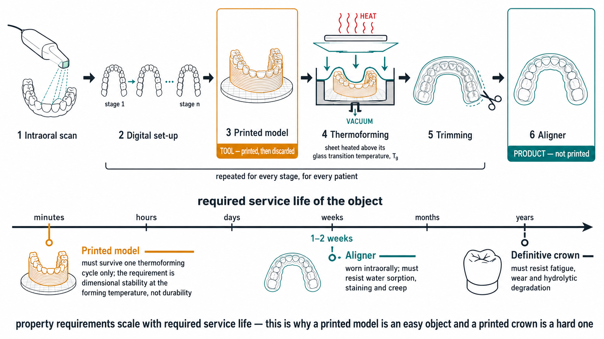
FIG. The printed object is the model — a tool that must survive one thermoforming cycle, minutes. The aligner is worn for 1–2 weeks; a definitive crown must resist years of fatigue, wear and hydrolysis. Property requirements scale with required service life.
Question to carry through the lectureFor each application: is the printed object the product or the tool?
Context · adoption
Adoption in dental laboratories, 2014–2022
US dental laboratories
2014
2022
With a 3D printer
~10%
57%
— large laboratories
—
97%
— small laboratories
—
34%
With a milling system
39%
67%
Key Group, 2022 US Dental Laboratory report. In-lab work still accounts for ~84% of the market — the laboratory, not the surgery, is where printing happens.
InterpretationAdoption of additive manufacturing rose from approximately 10% to 57% over eight years. It is unevenly distributed: 97% of large laboratories against 34% of small ones, which reflects the capital cost, throughput requirement and trained personnel the technology demands.
NoteThere is no evidence that milling declined as a result: over the same period milling adoption also rose, from 39% to 67%. The two are best regarded as complementary processes, and the criteria for choosing between them are developed later in this lecture.
Learning outcomes
Learning outcomes
1
Explain the basic principles of 3D printing — layer-by-layer fabrication and the steps from digital design to a finished dental object.
2
Identify the main technologies used to fabricate dental prosthetic and surgical devices.
3
Recognise the applications, advantages and limitations of 3D printing in prosthodontics and dental surgery.
Organising principle. In additive manufacturing the object and its properties are formed in the same operation. The processing route therefore determines clinical behaviour to a degree comparable with the choice of material itself — which is why this hour is arranged along structure → property → performance rather than by device.
PART 01 · structureWhat additive manufacturing isISO/ASTM 52900; single-step vs multi-step; slicing and the staircase effect.
PART 02 · structureFrom file to objectThe six process stages, and the build-orientation decision.
PART 03 · structureThe technologiesFive process families; the four optical routes; sintering vs melting.
PART 04 · propertyWhere properties are writtenGreen part, gel point, washing and post-curing, oxygen inhibition.
PART 05 · performanceFailures and the patientFailure modes, support placement, accuracy, clinical maturity.
Part 1 of 5
01
What additive manufacturing is
The standard definition· Single-step vs multi-step· Additive vs subtractive· The staircase
Structure · definitions
Single-step and multi-step processes
Additive manufacturing
"Process of joining materials to make objects from 3D model data, usually layer by layer, as opposed to subtractive manufacturing methods." ISO/ASTM 52900
The same standard draws a second distinction, which carries most of the clinical consequence:
Single-step
Shape and basic material properties are achieved in one operation.
What comes off the machine is what you have.
Multi-step
Shape is achieved first. Properties are achieved later, in a separate operation.
Vat photopolymerization is multi-step. So is metal printing. So is printed zirconia.
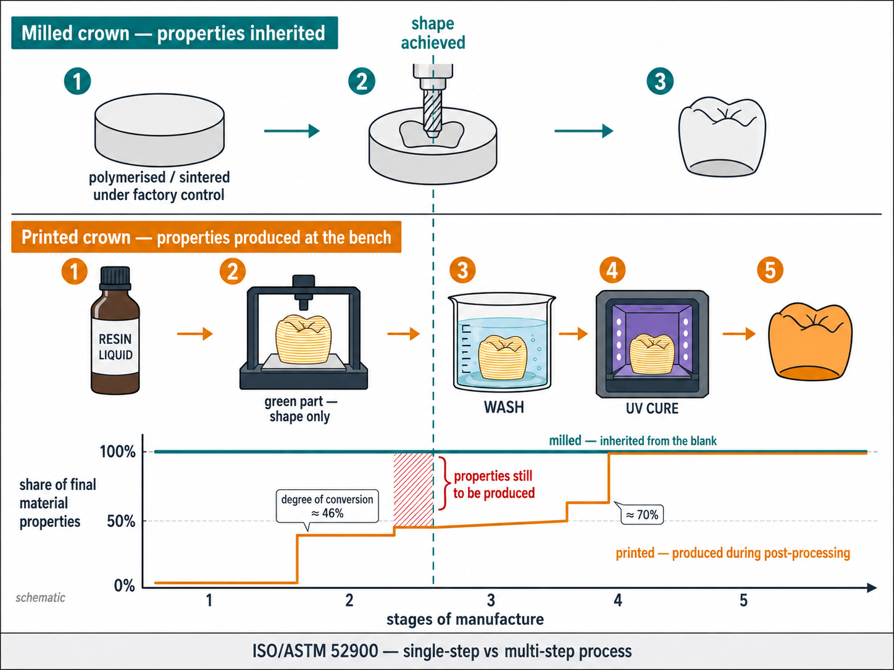
FIG. At the moment the geometry is complete, the milled crown already has its properties; the printed crown has less than half. Degree of conversion ≈46% in the green part, ≈70% after post-curing.
Clinical significanceA milled crown is machined from a blank whose properties were established industrially; those properties are inherited unchanged. A printed crown acquires its final properties during post-processing at the bench, and therefore depends on the wash and cure protocol actually used.
Structure · comparison of manufacturing routes
Additive and subtractive manufacturing compared
Advantages of the additive route
Geometric freedom — undercuts, internal channels, lattices; no tool has to reach the surface.
No tool radius — milling cannot cut a groove narrower than the bur, and internal corners are rounded by definition.
Nesting — dozens of parts per platform; the marginal cost of complexity is near zero.
Waste — a zirconia blank mostly becomes dust.
Advantages of the subtractive route
Industrially processed material — the blank was polymerised or sintered under controlled conditions, so its quality is inherited rather than produced at the bench.
Isotropy — no layer planes, therefore no weak axis.
Tolerance — typically ±0.025–0.125 mm.
Surface — no layer lines, no support scars.
Current laboratory practiceTypical practice is to print the model and the custom tray and to mill the definitive crown, allocating each process to the task for which its limitations are least consequential.
Structure · slicing
Slicing: converting a volume into a stack of layers
The operation is familiar from imaging. A CBCT converts a continuous volume into a stack of thin slices along one axis; the slicer performs the same discretisation on the STL, and the printer then reverses it, reconstructing the volume from the slices.
Shared limitationBoth are subject to the same constraint: resolution across the plane is inferior to resolution within it. In CBCT, slice thickness limits what can be resolved; in printing, layer height limits what can be fabricated. In-plane resolution is set by the optics or the nozzle; the z resolution is the layer height.
Analogies to avoidSliced bread: the slices are cut from a loaf that already exists, so a subtractive image is being used to describe an additive process. A brick wall: bricks are joined by a third material and are laid in staggered courses precisely to avoid a continuous plane of weakness, whereas printed layers are aligned — the analogy therefore understates the anisotropy.
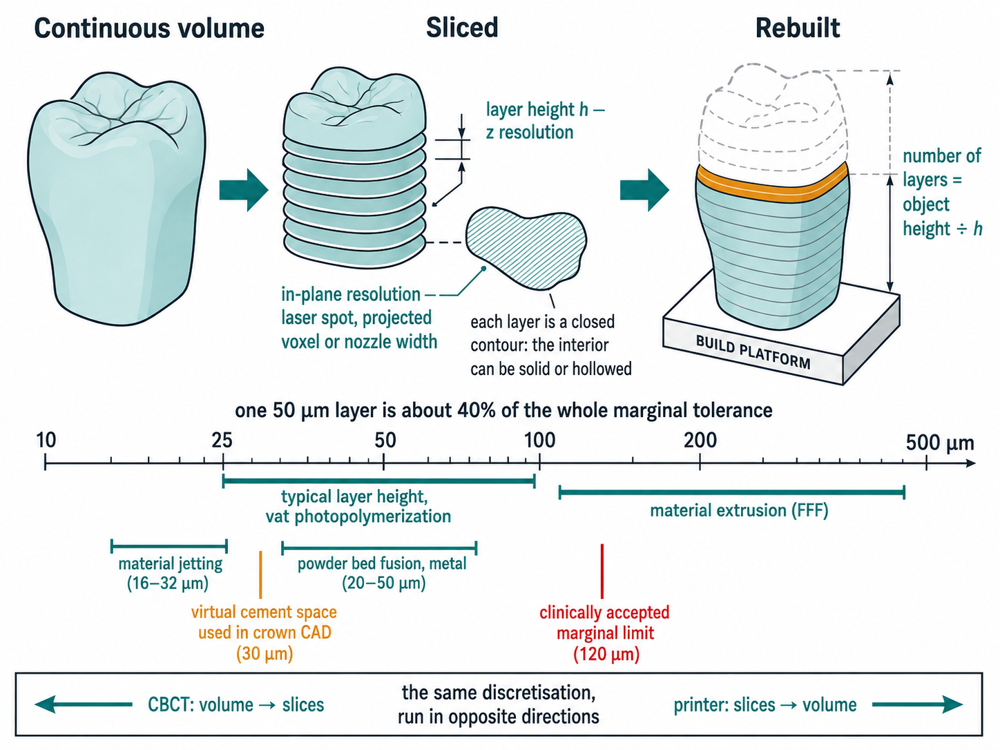
FIG. Resolution is anisotropic: layer height sets the z resolution, the optics or nozzle set the in-plane resolution. The scale places a 50 µm layer against the 30 µm cement space and the 120 µm marginal limit.
Structure → property · consequences of slicing
What layer height does to a restoration
Staircase effect
A continuous surface approximated by discrete stacked layers is reproduced as a series of steps of width h / tan θ, where h is the layer height and θ the angle of the surface to the build platform.
A vertical surface produces no staircase. As a surface approaches the horizontal, tan θ tends to zero and the step widens without limit.
In a crown this means the occlusal surface and the shallow cuspal inclines are the least favourable case, and the axial walls the most favourable — and which one the finish line belongs to depends on how the crown is oriented on the platform.
Reducing the layer height reduces the step, but the number of layers, and therefore the build time, rises in proportion to 1/h.
Device tolerance decidesLayer height is not equally important for every device. For orthodontic retainers, no significant difference in accuracy was found between 100 µm and 50 µm layers (p > 0.05). For a crown margin, where the acceptable discrepancy is measured in tens of micrometres, the same change is not negligible.
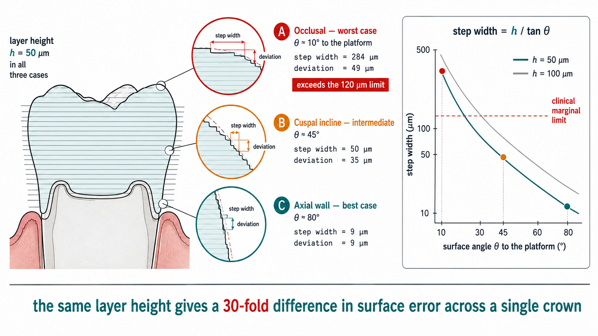
FIG. With h = 50 µm the step is 284 µm on the occlusal surface, 50 µm on a cuspal incline and 9 µm on the axial wall — a 30-fold range within one crown, and only the occlusal value exceeds the 120 µm limit.
Process
Typical layer height
Vat photopolymerization (SLA/DLP/LCD)
25–100 µm (commonly 50)
Material jetting
16–32 µm
Powder bed fusion (metal)
20–50 µm
Material extrusion (FFF)
50–400 µm
Interactive · layer height and surface angle
Layer height, surface angle and the staircase effect
A surface inclined at θ to the build platform, shown magnified. Vary the layer height and the surface angle, and observe the effect on step geometry and on build time.
Step width—= h / tan θ
Deviation from CAD—= h · cos θ
Layers (12 mm object)—= height / h
Print time—≈ 7 s per layer
Step geometry is exact. Time model: exposure + lift + retract + rest ≈ 7 s per layer, independent of h — so time scales as 1/h.
Part 2 of 5
02
From digital file to finished object
The six steps· What each step writes into the material· Build orientation
Structure → property · process workflow
From digital model to finished device
The upper band lists the decision taken at each stage; the lower band lists the material property that the decision determines.
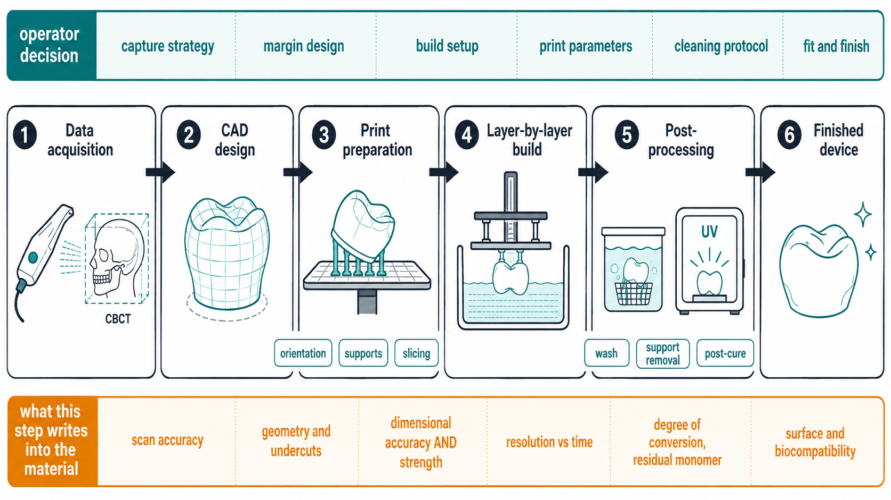
Stage 3, print preparation, has no equivalent in subtractive manufacturing. It is the stage at which a file is committed to one particular physical realisation.
Interactive · build orientation
Build orientation and marginal adaptation
The same crown file, resin and 50 µm layer height in every case. Only the build orientation is varied.
Marginal gap · SLA—Formlabs Form 2, permanent crown resin
Marginal gap · DLP—NextDent 5100, C&B resin
Farag E et al. BMC Oral Health 2024;24:73. n = 60 mandibular molar crowns, 10 per cell, 50 µm layers, 30 µm cement space, gap measured at 40× on four axial sites.
Interpretation of the evidence
Interpreting the marginal gap data
Build angle changed the marginal gap in both technologies, every pairwise comparison significant at p < 0.001. Pooled: 48.5 → 62.5 → 80.5 µm.
The worst cell (DLP at 90°, 89 µm) was more than double the best (SLA at 0°, 40 µm).
All six groups nevertheless remained below the conventional clinical limit of 120 µm.
InterpretationUnder these conditions, build orientation did not determine clinical acceptability for a single molar crown. It determined the margin of safety retained: the effect is systematic and predictable, and it is committed at the planning stage rather than at the chairside.
Methodological limitationSLA produced smaller gaps than DLP overall (55.6 vs 72 µm), but the two arms differed simultaneously in printer, resin and post-processing protocol. The comparison is therefore between two complete systems rather than between two technologies, and the authors conclude that no single method is inherently superior.
Origin of the thresholdThe 120 µm figure derives from McLean & von Fraunhofer (British Dental Journal, 1971), based on approximately one thousand restorations followed for five years. It remains the most frequently cited threshold, although proposed values in the literature range from 25 to 200 µm and no consensus exists.
Part 3 of 5
03
The family of technologies
Five process families· What consolidates the material· The optics of vat photopolymerization
Structure · process classification
Process families classified by consolidation mechanism
Five families. The third column is the classifying criterion; the remaining columns follow from it.
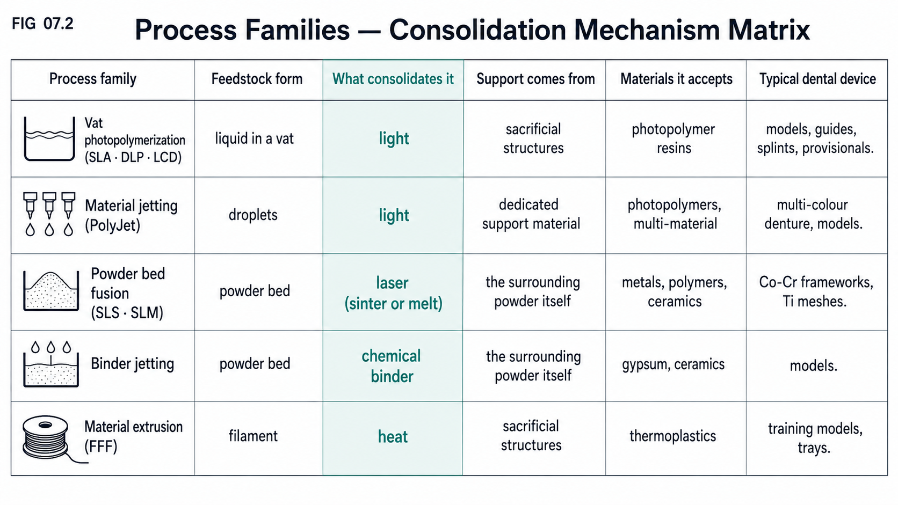
Where the feedstock is a powder bed, the unconsolidated powder acts as the support: no support structures require removal, but the part leaves the machine in a fragile state.
Structure · vat photopolymerization (1 of 2)
SLA and LCD / mSLA
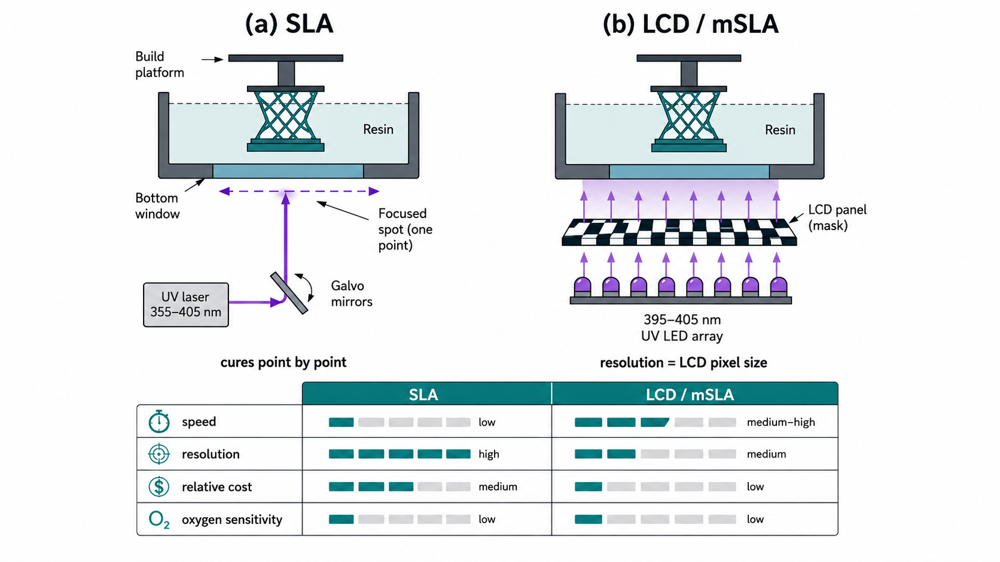
SLA traces each cross-section with a moving laser spot. LCD exposes the entire layer simultaneously through a pixel mask, so its resolution is determined by the pixel size and is degraded by light diffusion.
Structure · vat photopolymerization (2 of 2)
DLP and CLIP
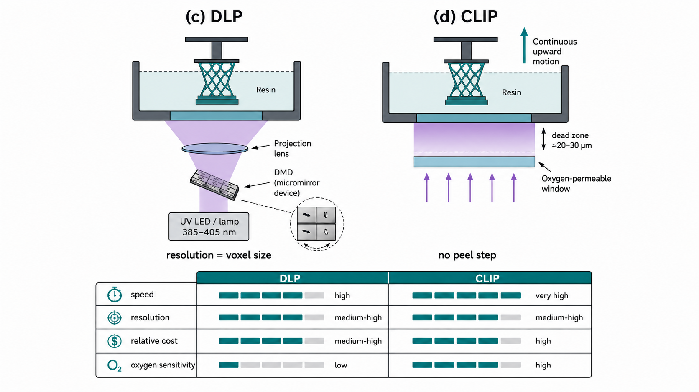
The dead zone in CLIP is revisited in Part 4, where the same reaction is examined in its more familiar form as a surface defect.
Structure · powder bed fusion
Powder bed fusion: sintering versus melting
SLS — selective laser sintering
The laser raises the powder to the point where particles fuse at their contacts without fully liquefying. Residual porosity is intrinsic.
SLM / DMLS — selective laser melting
A high-energy laser fully melts the metal powder layer into the one below, producing essentially fully dense metal.
Materials: Co-Cr, titanium and its alloys, stainless steel. Layers of 20–50 µm, in a sealed inert atmosphere.
ApplicationsRemovable partial denture frameworks, metal copings, implant frameworks and custom titanium meshes are produced by this route, which replaces the lost-wax casting sequence entirely.
Scope of this lectureThe thermal cycle that follows metal printing — stress relief, and in some routes debinding and sintering — is treated with the metallurgy in Lecture 16, Cobalt-chromium alloys. Required here is only the consolidation principle: the laser either sinters or fully melts the powder.
Hybrid workflowsThe most established commercial workflow for an implant bridge prints the framework and machines the implant interface: the additive route is used where geometry is unconstrained, the subtractive route where tolerance is critical.
Part 4 of 5
04
Where the properties are written
The green part· Gel point and trapped monomer· Two windows, not two dials· Oxygen
Property · post-processing sequence
The green part and the post-processing sequence
The term is borrowed from ceramics and powder metallurgy, where a green body has been formed but not yet sintered: the geometry is established, the material properties are not.
1 · Printed and washed
Translucent pale yellow; support nubs still attached.
2 · Post-cured
Translucent orange.
3 · Polished
Same colour, smooth, nubs removed.
4 · Sleeves seated
Metal guide cylinders inserted.
5 · Autoclaved
Back to pale yellow, slightly lighter.
→ degree of conversion increasing →
Colour as an indicatorThe shift from yellow to orange reflects the photoinitiator system reacting as conversion increases, providing a macroscopic indication of a molecular change. In practice it allows an uncured device to be identified visually.
Interactive · polymerisation kinetics
The gel point and residual monomer
Advance the reaction and observe that monomer mobility falls sharply while conversion is still well below completion.
Degree of conversion0%below 50% → leachable monomer
Monomer mobility100%collapses at the gel point
Leachable monomer100%
Kinetics per Hassanpour et al., Polymers 2024;16:2795. Best measured DC in a commercial cure unit: 69.6% at 45 min (Kirby et al.).
Property · process parameters
Washing and post-curing: optimal ranges
Washing
Insufficient — unreacted surface monomer remains. It is oxygen-inhibited and therefore not recovered by post-curing, and is associated with cytotoxicity, increased roughness and a substrate for cariogenic bacteria.
Excessive — solvent penetrates the network, producing swelling, osmotic stress and relaxation. Beyond 12 h, flexural strength falls and surface cracking is reported.
For cell viability, duration is a stronger determinant than the choice of solvent.
Post-curing
Insufficient — conversion remains low, with corresponding reductions in mechanical properties and biocompatibility.
Excessive — embrittlement; PMMA-based systems begin to depolymerise above approximately 125 °C, releasing monomer.
Temperature increases conversion but reduces dimensional accuracy; the two optima do not coincide.
General ruleEach post-processing variable has an optimal range rather than a monotonic effect. Departure in either direction carries a penalty, typically biocompatibility at the low end and mechanical performance at the high end.
Mechanism · oxygen inhibition
Oxygen inhibition in printing and in CLIP
Oxygen inhibition was introduced in Lecture 03 as a surface defect: atmospheric oxygen scavenges free radicals at the surface, leaving a thin unpolymerised, tacky layer on a composite restoration.
In printed partsThe surface of a printed part is inhibited by the same mechanism. This explains why insufficient washing is not corrected by longer curing — the inhibiting oxygen remains present — and why post-curing under nitrogen improves dimensional accuracy.
Application in CLIPIn CLIP, an oxygen-permeable window maintains a permanently liquid dead zone a few tens of micrometres thick at the base of the vat. Because the solid never contacts the window, no separation step is required and the part grows continuously rather than layer by layer.
Summary of the mechanismThe same radical-scavenging reaction accounts both for the inhibited surface layer, which must be removed by washing, and for the continuous-growth interface used in CLIP. Whether it presents as a defect or as a design feature depends on where in the process it is allowed to occur.
Part 5 of 5
05
When it goes wrong — and where it reaches the patient
Failure modes· Supports· Trueness and precision· Maturity
Performance · failure modes
Characteristic print failures and their causes
Each of these failure modes corresponds to an identifiable physical cause rather than to random variation.
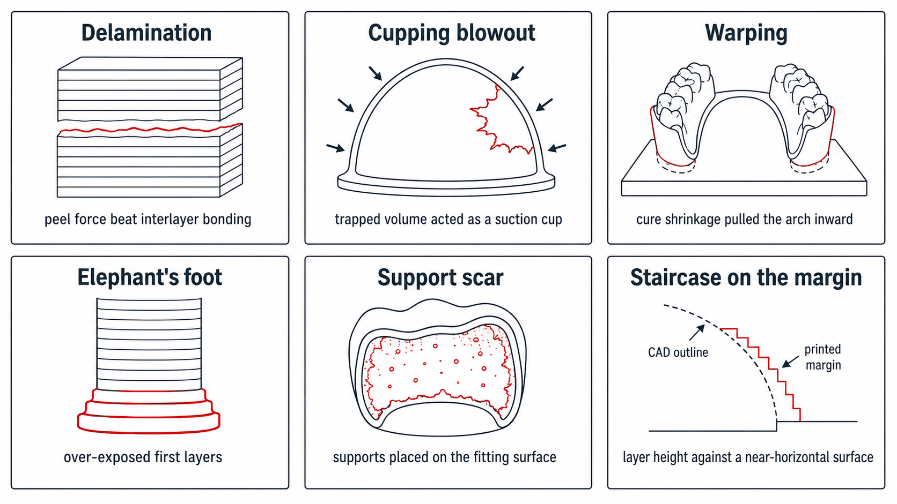
Cupping blowout illustrates the mechanism most clearly: as the platform lifts, a sealed concavity increases in volume, internal pressure falls, and the wall deforms inwards to equalise. A hollowed full-arch model presents precisely this geometry.
Performance · support placement
Support placement on a crown and on a denture base
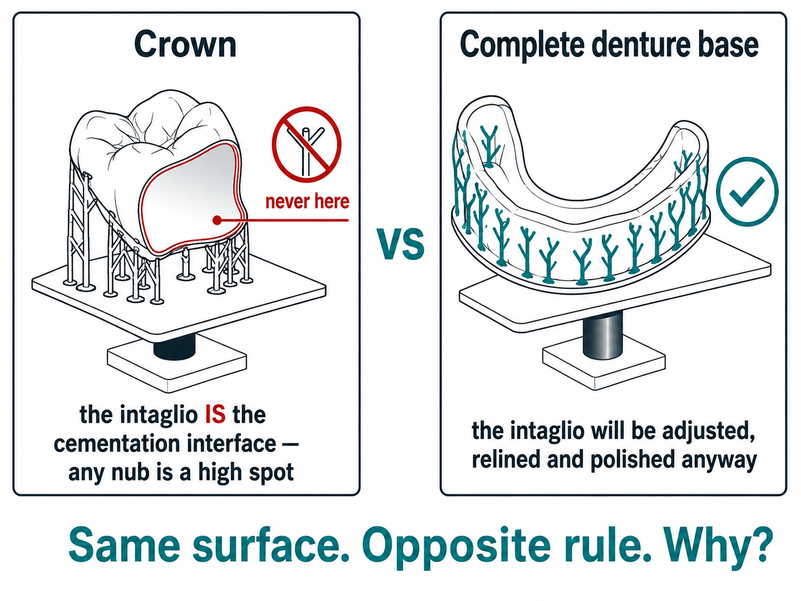
The intaglio of a crown is the cementation interface and receives no further finishing. The intaglio of a denture base is subsequently adjusted, relined and polished. The anatomical surface is equivalent; the subsequent processing is not, and the support strategy follows from that difference.
Performance · accuracy terminology
Trueness, precision, accuracy
Trueness
Closeness of the mean result to the true or reference value. How close you are to the CAD design.
Precision
Closeness of repeated results to each other. Reproducibility between copies.
Accuracy
The combination of the two. In the figure it corresponds to the diagonal, not to any single quadrant. ISO 5725
Practical consequencePrecision can be estimated in practice by scanning the same case repeatedly and comparing the scans with one another. Trueness cannot, since it requires an external reference that is not normally available. A systematic bias is therefore not directly detectable by the operator, and may present indirectly, for example as restorations that consistently seat tightly.
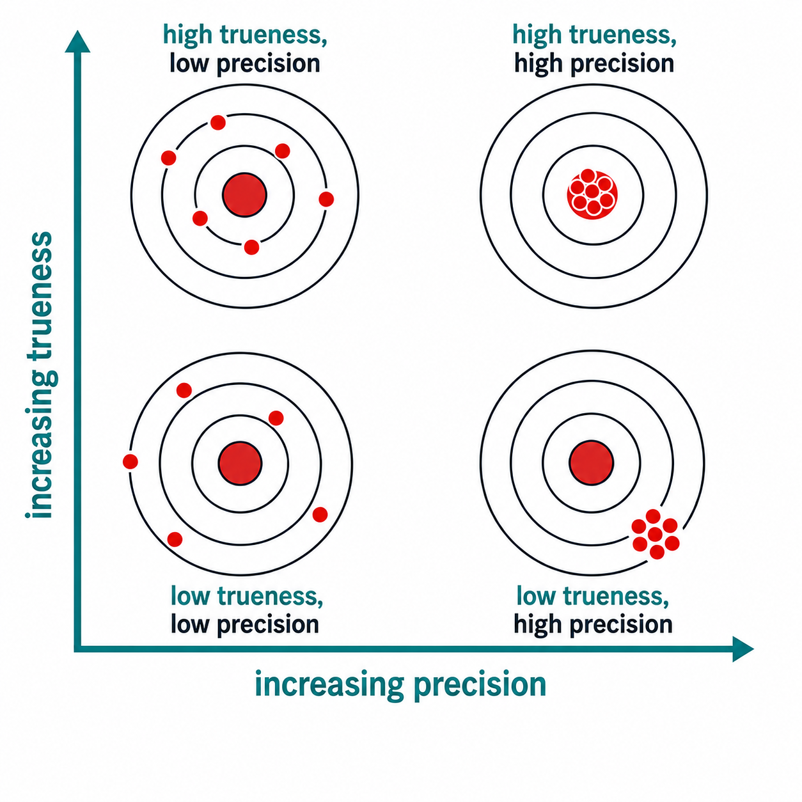
FIG. Accuracy increases along the diagonal, from bottom-left to top-right. Earlier dental literature frequently uses "accuracy" where "trueness" is meant; ISO 5725 records that the term formerly covered only that component.
Performance · reported accuracy
Reported accuracy: surgical guides and printed zirconia
Static guided implant surgery
Guide support
Angular
At the entry
At the apex
Tooth-supported
1.81°
0.59 mm
0.73 mm
Bone-supported
2.14°
1.04 mm
1.61 mm
Mucosa-supported
2.95°
1.47 mm
1.87 mm
J Funct Biomater 2026;17(4):194. Values are means ± SD in the source.
Discussion pointDeviation increases in the order tooth, bone, mucosa. The determining factor is the rigidity and positional stability of the supporting tissue, since the accuracy of the guide cannot exceed that of its seat.
Printed vs milled zirconia crowns
Printed
Milled
Vertical marginal gap
80 ± 30 µm
60 ± 20 µm
Seating discrepancy
100 ± 10 µm
60 ± 10 µm
Axial gap
no significant difference
BMC Oral Health 2023, 3Y-TZP, n = 20 per group.
InterpretationMilled crowns performed significantly better, and all values in both groups remained below 120 µm. The appropriate conclusion is that the printed route is clinically acceptable for this indication with a smaller margin of safety, rather than that it is unsuitable.
Performance · clinical maturity
Maturity of clinical applications
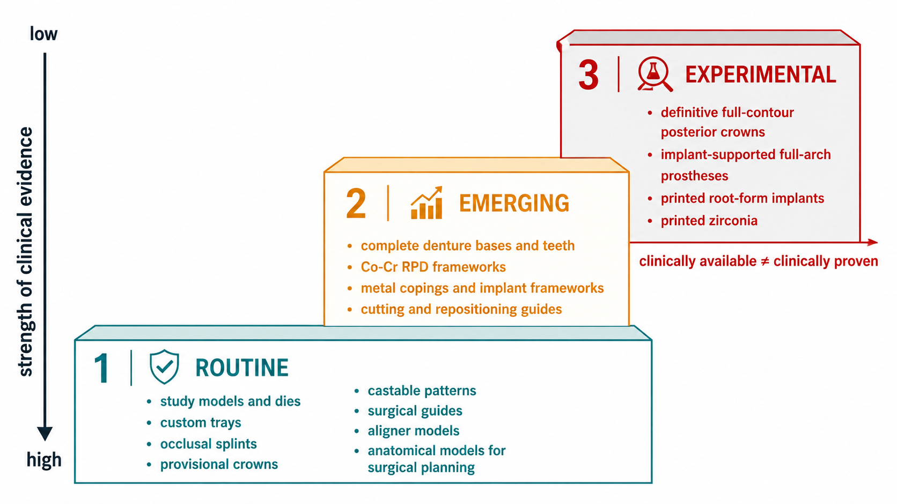
The evidence axis is inverted with respect to the steps: the highest tier is supported by the weakest evidence. Almost the entire published body of work is in vitro, and long-term survival data for printed definitive restorations are not yet available.
Summary
Summary of learning outcomes
1
Principles and workflow. Layer-by-layer construction; digital model → print preparation → build → post-processing → device. Single-step versus multi-step, and why the distinction is clinical. Parts 1–2 · staircase widget · orientation widget
2
The technologies. Five families classified by what consolidates the feedstock; the four optical routes in vat photopolymerization; sintering versus melting in metals. Part 3
3
Applications, advantages, limitations. Routine, emerging and experimental indications; failure modes and their causes; trueness versus precision; where milling still wins. Parts 4–5
Summary pointThe STL file specifies the intended geometry; the object that results is determined jointly by the printer, the resin, the build orientation and the post-processing cycle. The same file has been reported to yield a mean deviation of 0.07 mm on one system and 0.26 mm on another.
Jump to a slide
Click any slide · press O to toggle · Esc to close